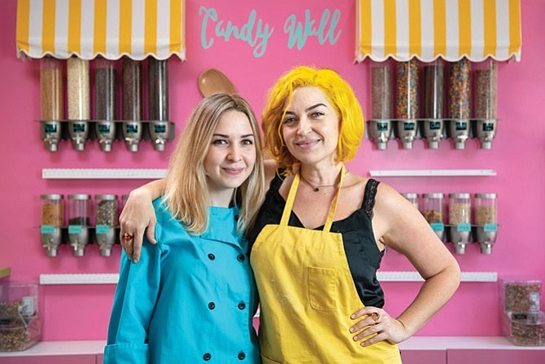

<!-- <p>about-us-page works!</p> -->

<div class="container">
  <div class="row my-2">
    <div class="col p-5">
      
      <!-- <p>Image</p> -->
    </div>
    <div class="col p-5">
      <p>
        We all dreamt of eating raw cookie dough as a child. Sneaking a spoonful hoping no one would notice, and then busted! You got yelled at by your mom! You can’t eat raw cookie dough! Well now you can! It’s no longer a dream. We make DOUGHlicious homemade cookie dough just like mom used to make with one big exception. You can eat it raw! We only use pure, high quality, natural ingredients.

        We have every flavor and topping you could ever dream of and we didn’t leave anyone out. We have gluten free, sugar free and vegan options available. And guess what? You can eat our cookie dough raw or bake it!

        We are a Los Angeles Based company that started out catering our irresistible secret recipe to the motion picture and music industry. But now our secret is out and were opening our first store to the public in beautiful downtown Burbank. Yes! We have the honorable title of being the first raw cookie dough store in Los Angeles. Our aDOUGHable store will be your new favorite place to hang out. You can gaze through our magical kitchen viewing windows and be transported back to a simpler time when the most exciting thing in your life was being handed the big wooden spoon still filled with raw cookie dough. Now you don’t have to wait, we’ll hand you the spoon and the bowl!
      </p>

    </div>
  </div>
</div>

